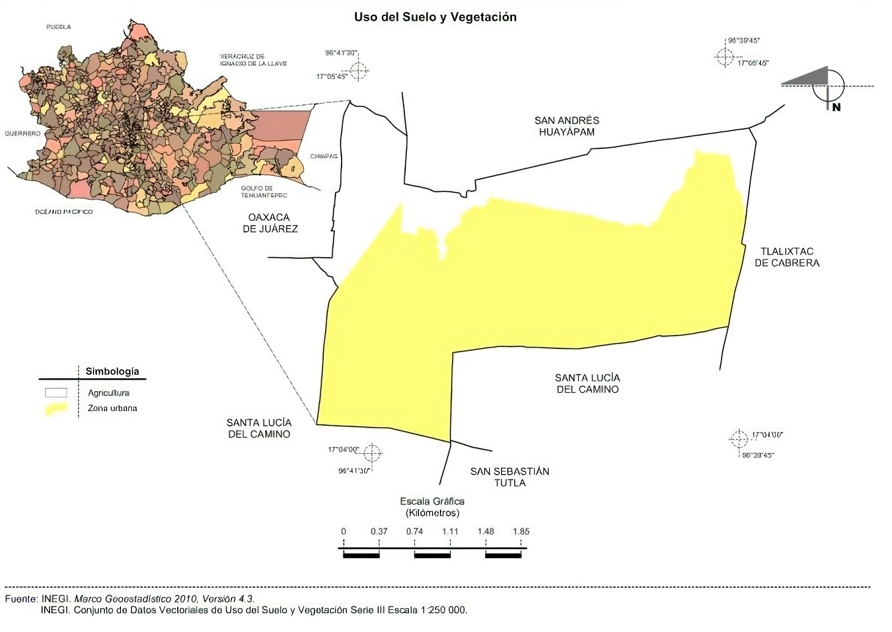

Medio físico
Localización: San Agustín Yatareni se encuentra ubicado en el estado de Oaxaca, México.
Extensión: El municipio tiene una superficie total de aproximadamente 6,42 km².
 Hidrografía: Destaca los dos ríos importantes que atraviesan el municipio,
el "Río Grande" y el "Río de Dolores".
Hidrografía: Destaca los dos ríos importantes que atraviesan el municipio,
el "Río Grande" y el "Río de Dolores".
El clima en San Agustín Yatareni se caracteriza por ser cálido y húmedo. La temperatura
media anual suele ser alrededor de 25°C.
Recursos Naturales: Los recursos naturales presentes en San Agustín Yatareni pueden incluir
una variedad de elementos como flora y fauna autóctonas, suelos fértiles, recursos forestales,
recursos hídricos, entre otros.

Características y Uso del Suelo: El suelo en San Agustín Yatareni puede tener características
variadas dependiendo de la zona, incluyendo suelos fértiles aptos para la agricultura y la ganadería.